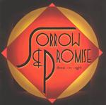

| Artist: | Divine In Sight |
| Title: | Sorrow & Promise |
| Label: | Divine-in-sight Music DIS1001CD |
| Length(s): | 74 minutes |
| Year(s) of release: | 2001 |
| Month of review: | [11/2001] |
| 1) | Black River | 12.45 |
| 2) | By Leaps And Bounds | 8.39 |
Sorrow & Promise (a christian rock opera)
| 3) | In A Box | 4.39 |
| 4) | Sorrow & Promise Overture | 4.32 |
| 5) | March Of The Damned | 5.03 |
| 6) | Waltz Of The Plastic Dolls | 4.14 |
| 7) | Viper's Brood | 6.28 |
| 8) | Sleep | 8.07 |
| 9) | Into The Abyss | 7.40 |
| 10) | Soul Of Music | 2.43 |
| 11) | Make Me More Like You | 9.31 |
By Leaps And Bounds is something else again. The song is instrumental except for a spoken recording at the beginning and is comparable to La Villa Strangiato of Rush. This means plenty of rock, plenty of bass and of course a huge amount of variation. Parts where the guitar dominates are alternated with those where the bass is foremost. Organ, heavy percussion make up for the remainder. The slower plodding part in the middle where the bass roams the speakers, is maybe a bit too slow, but soon after the band rocks away again. The spoken words return, giving rise to an energetic starting over on a more bombastic and optimistic note. The mood of the song now changes. The final part is mainly enthusiastic rock with a lot of repetition and less melody.
The major part of the album (more than fifty minutes) is taken up by the title track, spread over nine parts. The first part is a moody one in which the clear vocals of Boge reign accompanied by sparse percussion and melodic but soft spoken keyboards. The melody line is much better than on the first track, maybe a bit on the slick side (think Styx here), but with plenty of curves in them as well. The music that now follows is more orchestral, a bit like soundtrack music, somber and a bit sinister. We arrive now at a feast with a string orchestra playing a waltz of some kind and people having a good time. Finally then we move into the bombastic overture with its brimming organ and strong chords on guitar. The transition into a bit less melodic more groovy rock is rather unexpected. They could have fiddled around a bit less here. The music already points forward to coming parts of this song such as the Waltz Of The Plastic Dolls, which has a bit of the Queen playfulness. Instrumentally, the band continues to have the bass play a dominant role, oftimes in conjunction with the guitar.
The third part of the track opens with the reception and all the talking people already present in the previous part. The track itself is a strong one with a slowly evolving melody and a menacing undercurrent. Beautiful. The melody itself has a strong Arabic ring to it accented by the way the guitar plays it. The song also sounds very full with all kinds of choirs laying the groundwork. The next part, Waltz Of The Plastic Dolls, is really a waltz and because of the way the harmonies are done reminds me quite a bit of Queen.
Heavy guitars open one Viper Brood. This is quite a heavy piece with again Arabic leanings in the melody. The song is a bit of a slow starter with heavy rhythm guitar and a melodic bass. The effects of the snake hisses are quite nice, and I also liked the lyrics. This part of this Christian Progressive Rock Opera, is about the protagonist and an angel getting into a monastery where not everything is as it seems. Parts of the lyrics are sung by the "snakes" using vocoding and doubling.
Time for something more friendly and peaceful. This can be found in Sleep where the protagonist tries to awake people sleeping in the field, mobilizing them. The guitar solo in the middle is a very sharp one, bordering on dissonant. The three vocal parts lie spread in the song, with the band playing rather extensive instrumental parts in between. Between the second and third, the music gets to be rather bombastic and the vocals return forcefully supported by some noisy chords on guitar.
We reach hellfire on Into The Abyss. The sound of flames can be plainly heard on this one, where the vocal melody is a strong, easily remembered. After the imposing bombastic short track Soul Of Music, we come to the quieter closer Make Me More Like You, which owes quite a bit to Steve Howe. It is mostly a slow moving acoustic piece. That is until the music rocks loose again when we are not quite halfway.